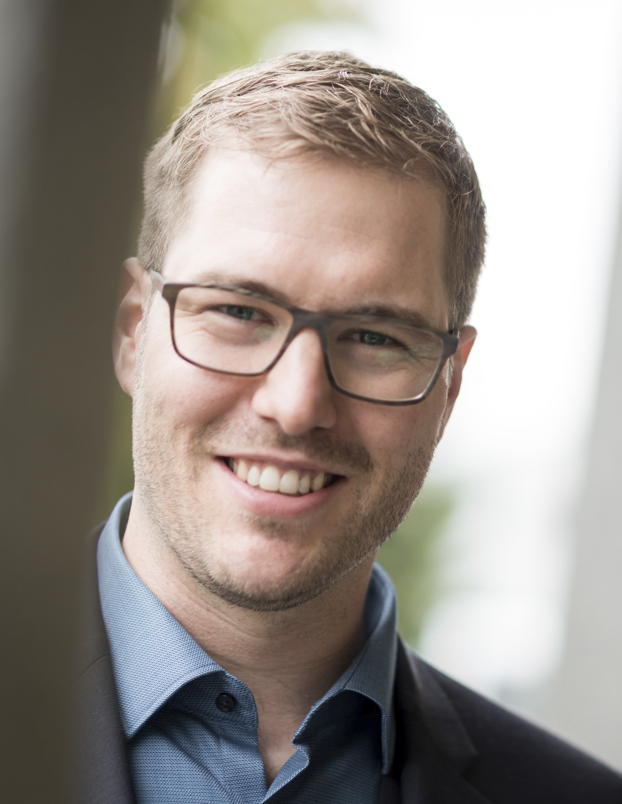

Ronny's Resume

Überblick
Software, Technik und Automatisation ist meine Leidenschaft. Dies
wiederspiegelt auch meine Ausbildung und beruflicher Werdegang
Aus-und Weiterbildung
- 2006-2009: Bachelor of Sience in System-Engineering
- 2002-2006: Berufsleher als Automatiker mit Berufsmatur
Berufserfahrung
Softwareentwickler für Leitsysteme im industriellen Umfeld bei der Firma
Erowa AG in Büron (Seit 08.2022)
Aufgabenbereich
-
Softwareentwicklung von Back-End Software in C# mit automatisierten
Softwaretests
- Softwareintegration
- Support
- Wartung
Tools
- Jetbrains Rider für Softwareentwicklung
- Jetbrains TeamCity für CI-Pipeline
- Git für Versions Verwaltung
Software- und Elektroentwickler in der Automation bei der Firma Bachmann
Engineering AG in Zofingen (06.2017-07.2022)
Aufgabenbereich
-
Programmierung von
-
SPS und Sicherheits-SPS mit TwinCAT (Beckhoff) und Siemens
TIA-Portal
- HMI C# WPF sowie Backend mit C#
- URCap mit Java, UI mit Java Swing
- Roboter Programmierung (Fanuc und UR)
- Erstellen von Elektroschema mit WSCAD
-
Erstellen von Risikobeurteilungen für Steuerung mit Safexpert und
Sistema
- Inbetriebnahme intern sowie beim Kunden
- Erstellen von Dokumentationen, Anlagen Schulung und Support
Softwareentwickler im Bereich Pressautomatisierung bei der Firma Güdel AG
in Langenthal (07.2013-04.2017)
Aufgabenbereich
- SPS-Softwareentwicklung mit TwinCAT (Beckhoff)
- SW-Teilprojektleiter
Testingenieur für 3D-Kameras bei der Firma Mesa-Imaging AG in Zürich
(08.2010-06.2013)
Aufgabenbereich
-
Entwicklung von Test- und Kalibriersetups für 3D-Kameras
(Softwareentwicklung mit Matlab, planen und aufbauen der Teststände)
- Entwickeln Test-und Kalibriersoftware mit Matlab
Skills
Software Entwicklung
- C# .net
- SPS (TwinCat 2 und 3, Siemens mit TIA Portal)
- Safety SPS (TwinSafe, Siemens)
- Java
- Roboter Programmierung (fanuc und UR)
Tools
- Rider und Visual Studio für C#
- TeamCity (Anwender)
- Azure DevOps (Anwender)
- Office (Word, Excel, Powerpoint)
About
Contatc Me